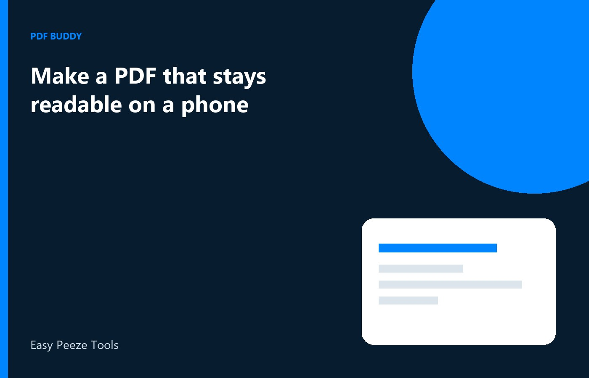

People read PDFs on a phone more often than on the laptop that created them: a landlord, a client, or a parent opens the file in a chat. If you exported a wide spreadsheet as a tiny photo, or photographed a printout and sent the picture, the phone shows a blur. The useful file is a PDF with a normal page size, text that is actually text, and margins a thumb can scroll. This is about how you export, not about squeezing under a chat size cap. When you do send it on WhatsApp, send it as a document. The app recompresses images, and a document keeps the PDF intact.
Keep text as text
If the source is a document, export a PDF from that document so the words stay text. A phone can then zoom a paragraph and still show sharp letters. A screenshot of the same page becomes a picture. Zoom turns it into blocks. Print-to-PDF or a proper export is the better path when you have the source. If you only have a scan, the scan should fill the page at a size you can read on the PC at 100 percent. A scan you cannot read at your desk will not become readable on a five-inch screen.
Do not stack a whole spreadsheet onto one landscape poster unless the reader is at a desk. For a phone, split the sheet into pages with fewer columns, or export the summary page the person asked for. A PDF that requires pinching both ways will be abandoned. Headings should be large enough that the first screen shows what the file is. A title in 8-point type at the top of an A3 page is invisible on a phone until someone zooms and gets lost.
- Export text as text, not as a screenshot
- A scan must already be readable at normal zoom on the PC
- Fewer columns per page when the reader is on a phone
- A heading that is visible without a pinch
Page size and margins a phone can scroll
A4 portrait is the safest default for letters, bills, and certificates in India, because phone viewers open that shape without a surprise. Landscape is fine for a drawing if each page is one drawing, upright in its own frame, not a tilted photo of a drawing. Leave a real margin. Text that touches the edge disappears under the phone's toolbar or gets cut when someone prints later. If you crop a scan to the paper, keep a small white edge anyway.
Avoid a PDF made of one very long image, the kind a scrolling capture produces. Those files open as a thin strip, and the phone spends its sharpness on a page that is many screens tall. Break the capture into normal pages. Also avoid a page that is only a tiny card in the middle of a blank A4 sheet if you can place the card large on the page. The reader should not have to zoom across white space to find a receipt number.
Photos of paper need enough contrast
When the original is paper, photograph it flat, with the page filling the frame, and turn that image into a PDF page. A photo of a monitor, or a photo of a photo, adds a second blur. You will see moire and soft digits. Go back to the file or reshoot the paper. Do not sharpen so hard that letters break into halos. Halos look crisp on a desktop thumbnail and fall apart on a phone. After export, open the PDF on a phone you have, or in a narrow preview, and read one full line. That test is the standard. Your large monitor is too forgiving.
Colour is useful for seals and stamps. It is not useful for a long text letter if it only adds blur and weight. A clean greyscale text page often stays sharper. Keep colour on the pages that need the seal. This choice is about legibility. It is not a contest to make the smallest file. A file that is small and fuzzy has failed, even if it was easy to send.
Send the PDF as a document
In WhatsApp and similar apps, choose the document option and pick the PDF. Sending the same pages as images lets the app recompress each picture, which is why a file that looked fine in the folder arrives soft. The document path keeps the PDF you exported. You can still mention, in one line, which page has the total. Do not also paste screenshots into the chat. People will read the screenshots and ignore the sharper file.
Build that PDF on the PC with Pdf Buddy: export or create the pages, set a normal page size, and check them before you send. The file does not need a random website to become phone-friendly. If a portal or a mail app is the destination instead of chat, the same export rules apply. The phone test is still worth doing, because the other person will often preview on a phone anyway.
Questions people actually ask
The PDF looks sharp on my laptop and blurry on my phone. What went wrong? The page is probably a picture, not text, or the type is too small for the page size. Export real text where you can, use A4 with a margin, and read a line in a phone-width preview. A screenshot of a spreadsheet will not survive zoom.
Should I send the PDF in the chat as photos so it is quicker to view? Send it as a document. Chat apps recompress images, so the photo path throws away the sharpness you just exported. A document keeps the PDF. A one-line note can point to the page that matters. Skip the extra screenshots in the same chat.
Is a very long scrolling image acceptable if it is one page? Break it into normal A4 pages. A single tall image is hard to read on a phone and hard to print. Each page should show a section you can finish without losing the line you were on. A heading on each page helps.
Export a normal page on the PC and send the PDF as a document. Pdf Buddy, by Easy Peeze Tools, is a Windows desktop PDF editor that works on the PC. The file is not uploaded to a random website. The free tier is 2 files a day. Pricing starts at ₹149. Go to download.